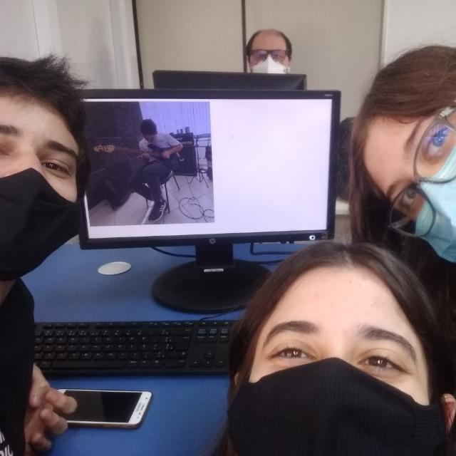
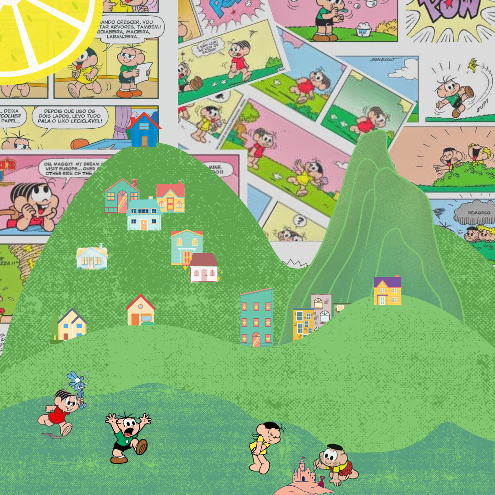

Nosso aplicativo consiste em um conjunto de jogos educacionais
simples para crianças com TEA (Transtorno do Espectro Autista),
onde ajudarão no desenvolvimento da criança, promovendo o
aumento do raciocínio e auxílio no processo de alfabetização.
Crianças com TEA possuem dificuldade comunicativa e o processo
de aprendizagem é diferente, portanto é importante darmos a
devida atenção para que ela se desenvolva corretamente.

Teenager's void
Estilo: Pop Art
Evidenciando elementos da infância de muitos,
a obra também tem sua parte atual, com memes e imagens que viralizaram há não muito tempo.
Cores vivas e um filtro vintage estão presentes também. A obra faz alusão a mente de um adolescente,
que está repleta de coisas, que juntas, parecem um tanto quanto confusas.
Nostalgia
Estilo: Pop Art
Assim como o nome já diz, a obra Nostalgia foi criada com a intenção de dar
um gostinho da infância do brasileiro por meio do uso da Pop Art. Utilizando várias imagens de HQ’s e formas
coloridas, ela mostra uma representação do bairro do Limoeiro, icônico lar da Turma da Mônica, criação do Mauricio de Souza.

Who's the monster?
Estilo: Arte Urbana
A obra demonstra como a vida das cidades destrói a arte e diminui cada vez mais sua valorização,
trazendo um “monstro” sendo atacado por humanos e um questionamento sobre quem realmente é o monstro: a cidade que destrói as expressões
artísticas e deprecia a arte ou um animal gigante que destrói a cidade?